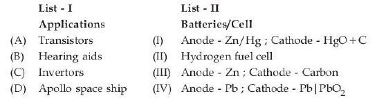

Filter questions
📌 CHEM-ATOMSTRU-BOHR_MODEL_TRANSITIONS
↗ Cluster set
Q1
CHEM-2021-0101-S2-Q043
2021 | 01 Sep | Shift 2
—
MCQ
Identify the element for which electronic configuration in oxidation state is d5: +3 [Ar]3
Answer: D
Q2
CHEM-2021-0101-S1-Q033
2021 | 22 Jul | Shift 1
—
MCQ
Match List-I with List-II List - I List - II (Elements) (Properties)
Answer: A
Q3
CHEM-2021-0101-S1-Q045
2021 | 25 Feb | Shift 1
—
MCQ
In which of the following pairs, the outermost electronic configuration will be the same?
Answer: A
Q4
CHEM-2021-0101-S2-Q033
2021 | 26 Feb | Shift 2
—
MCQ
Given below are two statements: one is labelled as Assertion A and the other is labelled as Reason R. Assertion A: In TlI3, isomorphous to CsI3, the metal is present in +1 oxidation state. Reason R: Tl metal has fourteen f electrons in its electronic configuration. In the light of the above statements, choose the most appropriate answer from the options given below:
Answer: D
Q5
CHEM-2021-0101-S1-Q031
2021 | 27 Jul | Shift 1
—
MCQ
Given below are two statements: Statement I: Rutherford's gold foil experiment cannot explain the line spectrum of hydrogen atom. Statement II: Bohr's model of hydrogen atom contradicts Heisenberg's uncertainty principle. In the light of the above statements, choose the most appropriate answer from the options given below:
Answer: D
Q6
CHEM-2021-0101-S1-Q051
2021 | 31 Aug | Shift 1
—
Integer
Ge (Z = 32) in its ground state electronic configuration has x completely filled orbitals with ml = 0. The value of x is __________.
Answer: 7
Q7
CHEM-2021-0101-S2-Q043
2021 | 31 Aug | Shift 2
—
MCQ
The Eu2 + ion is a strong reducing agent in spite of its ground state electronic configuration (outermost): [Atomic number of ] Eu = 63
Answer: B
Q8
CHEM-2022-0101-S2-Q036
2022 | 28 Jun | Shift 2
—
MCQ
Hydrogen has three isotopes: protium (1H), deuterium ( 2H or ) and tritium ( 3H or ). They have nearly D T same chemical properties but different physical properties. They differ in
Answer: D
Q9
CHEM-2023-0101-S1-Q032
2023 | 08 Apr | Shift 1
—
MCQ
The number of following statement/s which is/are incorrect is ______ A) Line emission spectra are used to study the electronic structure B) The emission spectra of atoms in the gas phase show a continuous spread of wavelength from red to violet. C) An absorption spectrum is like the photographic negative of an emission spectrum D) The element helium was discovered in the sun by spectroscopic method
Answer: B
Q10
CHEM-2023-0101-S2-Q031
2023 | 30 Jan | Shift 2
—
MCQ
The wave function of is given by (Ψ) 2 s 1 ( 1 ) 1/2 (2 r )e−r/2a0 Ψ2s = 2√2π a0 − a0 At, radial node is formed. Thus, in terms of r = r0 r0 a0
Answer: D
Q11
CHEM-2023-0101-S1-Q031
2023 | 31 Jan | Shift 1
—
MCQ
Which transition in the hydrogen spectrum would have the same wavelength as the Balmer type transition from n = 4 to n = 2 of He+spectrum
Answer: A
Q12
CHEM-2024-0101-S2-Q046
2024 | 01 Feb | Shift 2
—
MCQ
Given below are two statements: one is labelled as Assertion A and the other is labelled as Reason R. Assertion A: In aqueous solutions Cr2 + is reducing while Mn3 + is oxidising in nature. Reason R: Extra stability to half filled electronic configuration is observed than incompletely filled electronic configuration. In the light of the above statement, choose the most appropriate answer from the options given below:
Answer: A
Q13
CHEM-2024-0101-S1-Q052
2024 | 05 Apr | Shift 1
—
Integer
The value of Rydberg constant (RH) is 2.18 × J. The velocity of electron having mass 9.1 × kg in Bohr's first orbit of hydrogen atom = _______ ×105 ms−1 (nearest integer).
Answer: 22
Q14
CHEM-2024-0101-S1-Q051
2024 | 06 Apr | Shift 1
—
Integer
Frequency of the de-Broglie wave of electron in Bohr's first orbit of hydrogen atom is _______ ×1013 Hz [Given: RH( Rydberg constant ) = 2.18 × 10−18 J, h (Plank's (nearest integer). constant ) = 6.6 × 10−34 J.s.]

Answer: 661
Q15
CHEM-2024-0101-S2-Q033
2024 | 08 Apr | Shift 2
—
MCQ
When ψA and ψB are the wave functions of atomic orbitals, then σ∗ is represented by:
Answer: B
Q16
CHEM-2024-0101-S2-Q033
2024 | 09 Apr | Shift 2
—
MCQ
List - I (Element) List - II (Electronic configuration) A. N I. [Ar]3 d104 s24p5AR Match List I with List II B. S II. [Ne]3 s23p4 Choose C. Br III. [He]2 s22p3 d104 D. Kr IV. [Ar]3 s24p6 the correct answer from the options given below:
Structured List-I / List-II view
| Label | List-I | List-II | Match |
|---|---|---|---|
| A | N | [Ar]3 d104 s24p5AR Match List I with List II | I |
| B | S | [Ne]3 s23p4 | II |
| C | Br | [He]2 s22p3 d104 | III |
| D | Kr | [Ar]3 s24p6 the correct answer from the options given below: | IV |
Answer: A
Q17
CHEM-2024-0101-S2-Q051
2024 | 09 Apr | Shift 2
—
Integer
Based on Heisenberg's uncertainty principle, the uncertainty in the velocity of the electron to be found within an atomic nucleus of diameter 10−15 m is ________. 109 ms−1 (nearest integer) [Given: mass of electron 10−31, Plank's constant 10−34Js ] (Value of ) = 9.1 × kg (h) = 6.626 × π = 3.14

Answer: 58
Q18
CHEM-2024-0101-S1-Q031
2024 | 27 Jan | Shift 1
—
MCQ
The electronic configuration for Neodymium is: [Atomic Number for Neodymium 60]
Answer: A
Q19
CHEM-2024-0101-S1-Q032
2024 | 27 Jan | Shift 1
—
MCQ
Which of the following electronic configuration would be associated with the highest magnetic moment?
Answer: D
Q20
CHEM-2024-0101-S2-Q041
2024 | 27 Jan | Shift 2
—
MCQ
Choose the correct option having all the elements with d10 electronic configuration from the following:
Answer: B
📌 CHEM-ATOMSTRU-QUANTUM_NUMBERS_ELECTRONIC_CONFIG
↗ Cluster set
Q21
CHEM-2021-0101-S1-Q051
2021 | 20 Jul | Shift 1
—
Integer
The Azimuthal quantum number for the valence electrons of Ga+ ion is (Atomic number of Ga = 31 )
Answer: 0
Q22
CHEM-2021-0101-S2-Q031
2021 | 20 Jul | Shift 2
—
MCQ
Outermost electronic configuration of a group 13 element, E, is 4 s2, 4p1. The electronic configuration of an element of p-block period-five placed diagonally to element, is: E
Answer: D
Q23
CHEM-2021-0101-S2-Q031
2021 | 24 Feb | Shift 2
—
MCQ
According to Bohr's atomic theory:
Answer: B
Q24
CHEM-2021-0101-S1-Q059
2021 | 26 Aug | Shift 1
—
Integer
The number of electrons in the ground state electronic configuration of Gd2+ is [Atomic number of 4f Gd = 64]
Answer: 7
Q25
CHEM-2021-0101-S1-Q032
2021 | 26 Feb | Shift 1
—
MCQ
Match List- I with List- II. List- I List- II Electronic configuration of elements ΔiH in kJ mol−1
Answer: A
Q26
CHEM-2021-0101-S1-Q053
2021 | 27 Aug | Shift 1
—
Integer
The number of f electrons in the ground state electronic configuration of Np(Z = 93) is ______.(Integer answer)
Answer: 18
Q27
CHEM-2022-0101-S2-Q052
2022 | 27 Jun | Shift 2
—
Integer
Consider the following set of quantum numbers. n l m1 A 3 3 −3 B 3 2 −2 C 2 1 +1 D 2 2 +2 The number of correct sets of quantum numbers is
Answer: 2
Q28
CHEM-2022-0101-S2-Q032
2022 | 28 Jun | Shift 2
—
MCQ
Consider the following statements:
Answer: C
Q29
CHEM-2022-0101-S1-Q032
2022 | 29 Jun | Shift 1
—
MCQ
Which of the following statements are correct?
Answer: D
Q30
CHEM-2022-0101-S1-Q033
2022 | 29 Jun | Shift 1
—
MCQ
The electronic configuration of Pt (atomic number 78 ) is
Answer: D
Q31
CHEM-2024-0101-S1-Q032
2024 | 01 Feb | Shift 1
—
MCQ
In case of isoelectronic species the size of Ne and is affected by:
Answer: D
Q32
CHEM-2024-0101-S2-Q051
2024 | 05 Apr | Shift 2
—
Integer
In an atom, total number of electrons having quantum numbers n = 4, | ml| = 1 and ms = −1 is ______ 2
Answer: 6
Q33
CHEM-2024-0101-S1-Q031
2024 | 09 Apr | Shift 1
—
MCQ
Compare the energies of following sets of quantum numbers for multielectron system.
Answer: D
Q34
CHEM-2024-0101-S2-Q032
2024 | 09 Apr | Shift 2
—
MCQ
The electronic configuration of Einsteinium is: (Given atomic number of Einsteinium = 99)
Answer: C
Q35
CHEM-2024-0101-S1-Q052
2024 | 27 Jan | Shift 1
—
Integer
The number of electrons present in all the completely filled subshells having n = 4 and s = + 1 is ____ 2 (Where n = principal quantum number and s = spin quantum number) NO+
Answer: 16
Q36
CHEM-2024-0101-S1-Q031
2024 | 29 Jan | Shift 1
—
MCQ
The correct set of four quantum numbers for the valence electron of rubidium atom (Z = 37) is:
Answer: A
Q37
CHEM-2024-0101-S2-Q032
2024 | 31 Jan | Shift 2
—
MCQ
The four quantum numbers for the electron in the outer most orbital of potassium (atomic no. 19) are
Answer: B
Q38
CHEM-2025-0101-S1-Q057
2025 | 28 Jan | Shift 1
—
Integer
In a multielectron atom, which of the following orbitals described by three quantum numbers will have same energy in absence of electric and magnetic fields? A. B. C. n = 1, l = 0, m1 = 0 n = 2, l = 0, m1 = 0 n = 2, l = 1, m1 = 1 D. n = 3, l = 2, m1 = 1 E. n = 3, l = 2, m1 = 0 Choose the correct answer from the options given below: (1) B and C Only (2) A and B Only (3) C and D Only (4) D and E Only

Answer: 4
Q39
CHEM-2025-0101-S2-Q044
2025 | 28 Jan | Shift 2
—
MCQ
The frequency of revolution of the electron in Bohr's orbit varies with n, the principal quantum number as
Answer: D
Q40
CHEM-2025-0101-S2-Q058
2025 | 29 Jan | Shift 2
—
Integer
For hydrogen like species, which of the following graphs provides the most appropriate representation of E vs Z plot for a constant n? [E: Energy of the stationary state, Z: atomic number, n = principal quantum number] (1) (2) (3) (4)

Answer: 1
📌 CHEM-ATOMSTRU-DE_BROGLIE_HEISENBERG
Q41
CHEM-2023-0101-S1-Q031
2023 | 15 Apr | Shift 1
—
MCQ
Given below are two statements Statement I: According to Bohr’s model of hydrogen atom, the angular momentum of an electron in a given stationary state is quantised. Statement II: The concept of electron in Bohr’s orbit, violates the Heisenberg uncertainty principle. In the light of the above statements, choose the most appropriate answer from the options given below
Answer: B